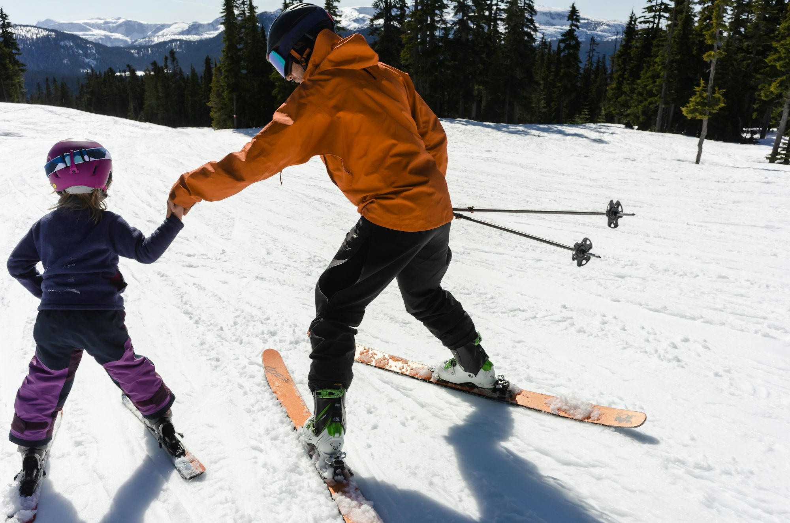
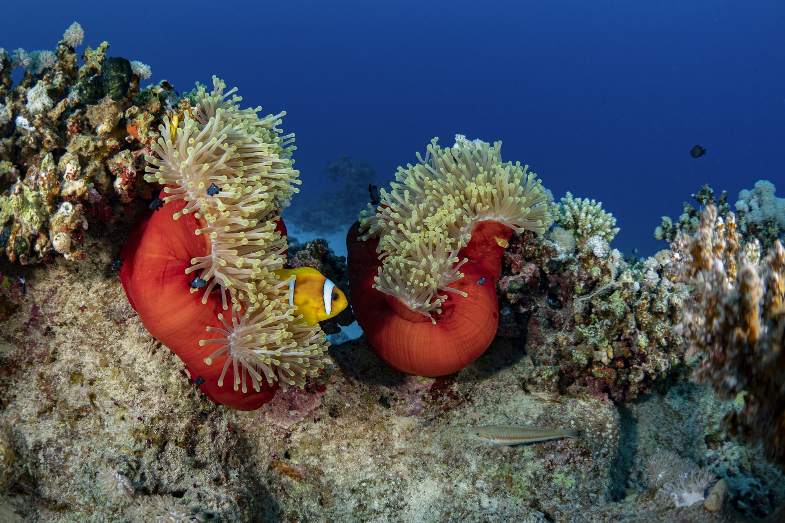
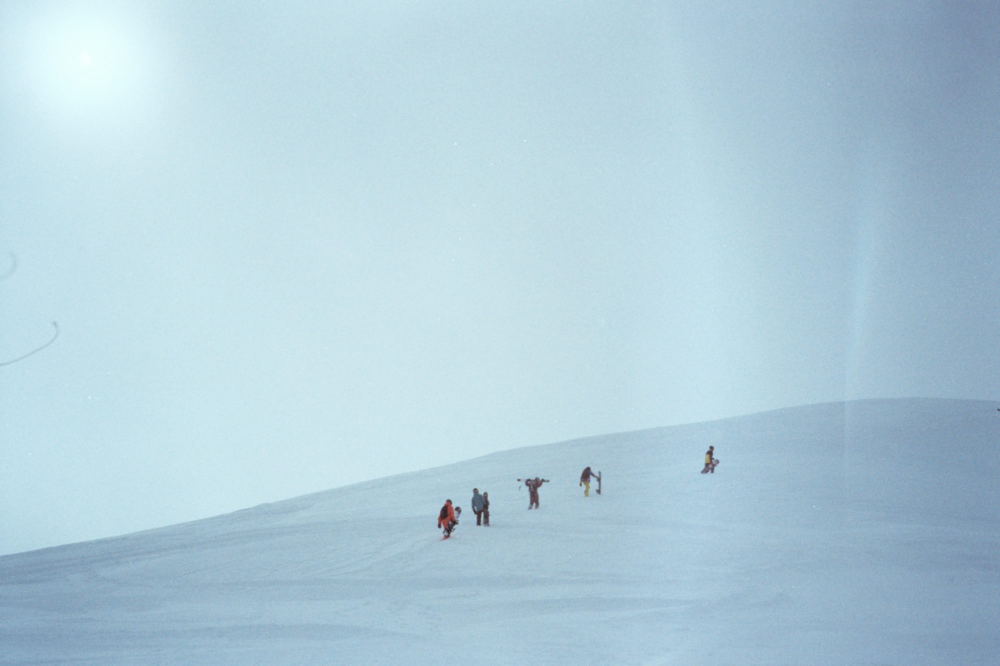
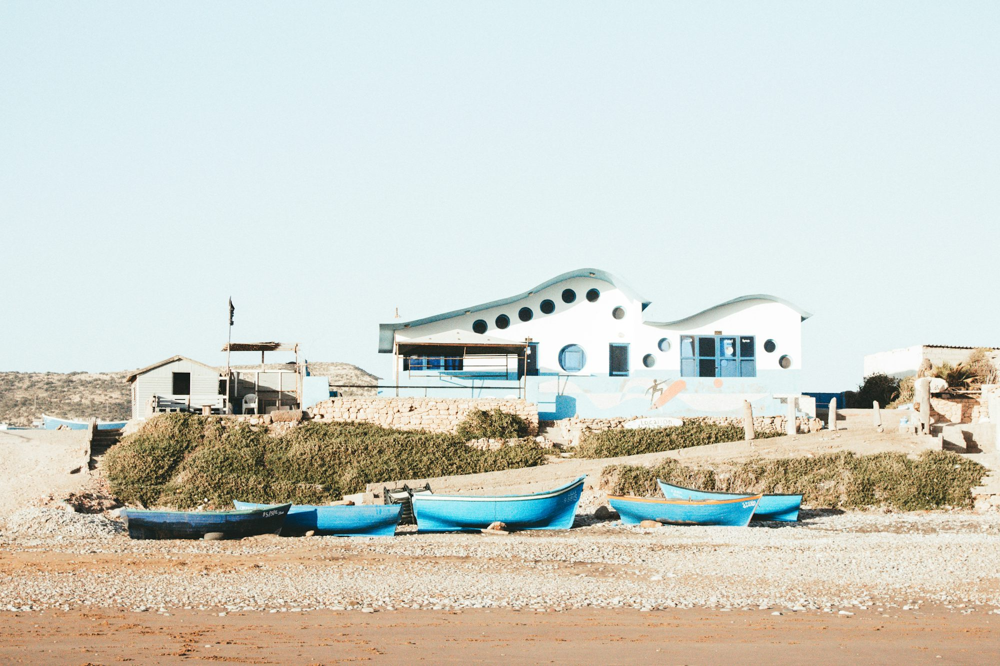
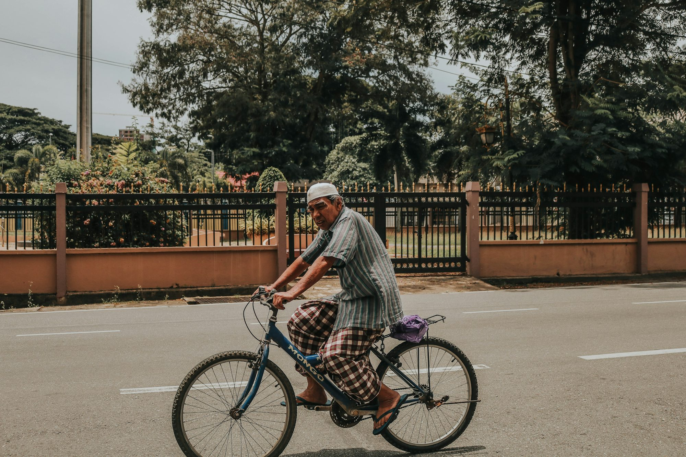
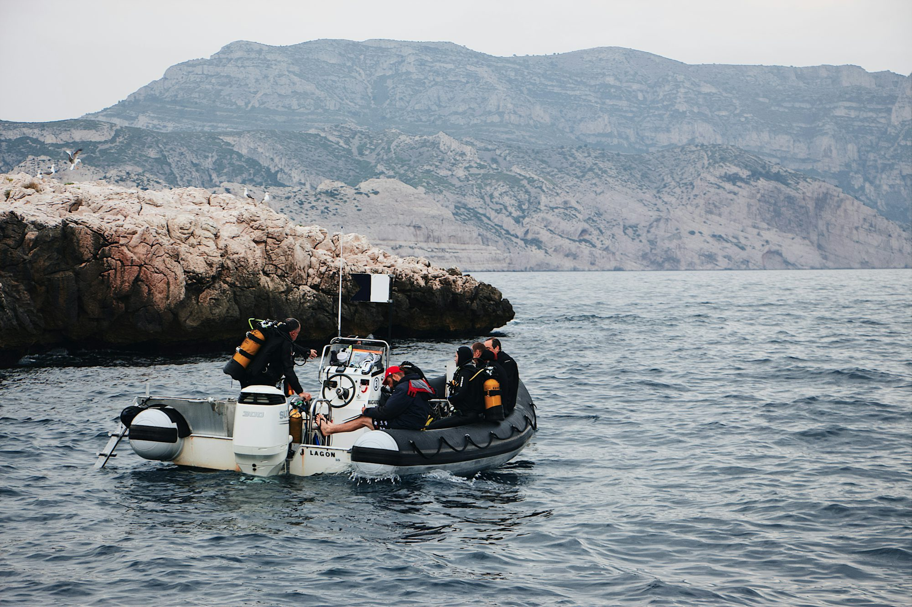
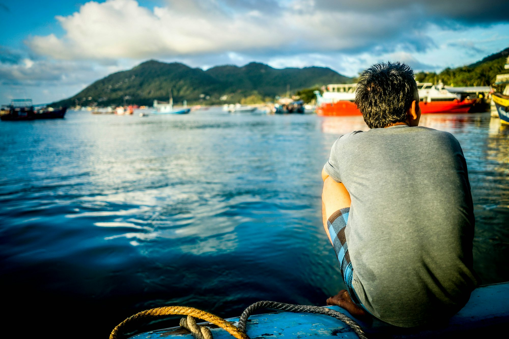
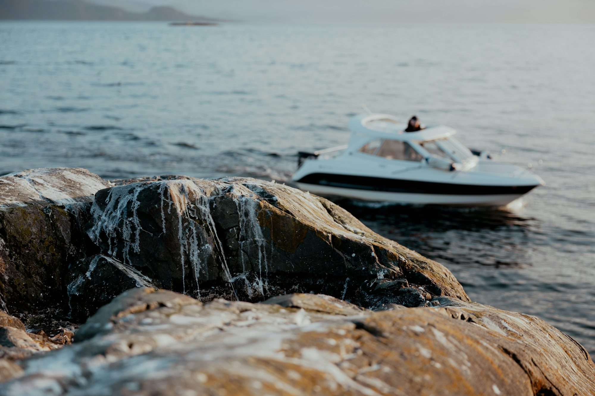

Imagery collection
Consumer Feedback System
Essential reads

12/22/25
Maya Thompson
Discovering the Ocean's Secrets: A Deep Dive into Marine Exploration
This article explores various forms of marine exploration through diving, highlighting their unique characteristics, techniques, and the beauty of underwater ecosystems.

Sophia Martinez

Exploring the Art of Ice Fishing: Techniques and Tips for a Successful Winter Adventure

08/12/25
Liam Carter
Exploring the Art of Snowboarding: Techniques, Styles, and Culture
This article provides a comprehensive overview of snowboarding, covering essential techniques, diverse styles, and the vibrant culture that surrounds this thrilling sport.

06/23/25
Sofia Martinez
Cycling Across Cultures: A Journey Through Scenic Routes
This article explores the cultural significance of cycling, highlighting scenic routes around the world and the unique experiences they offer to riders.


01/28/26
Lucas Bennett
Beneath the Waves: A Journey Through Diving Adventures
This article explores the diverse experiences and skills involved in various diving disciplines, showcasing the beauty and importance of underwater exploration.

12/16/25
Oliver Bennett
A Comprehensive Guide to Coastal Fishing Techniques
This article explores various coastal fishing techniques, providing insights, tips, and recommendations for anglers seeking to enhance their fishing experience along the shore.
